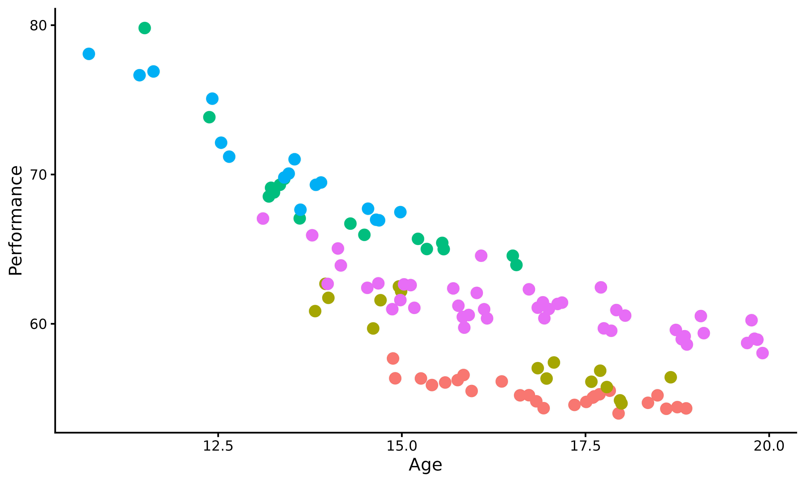
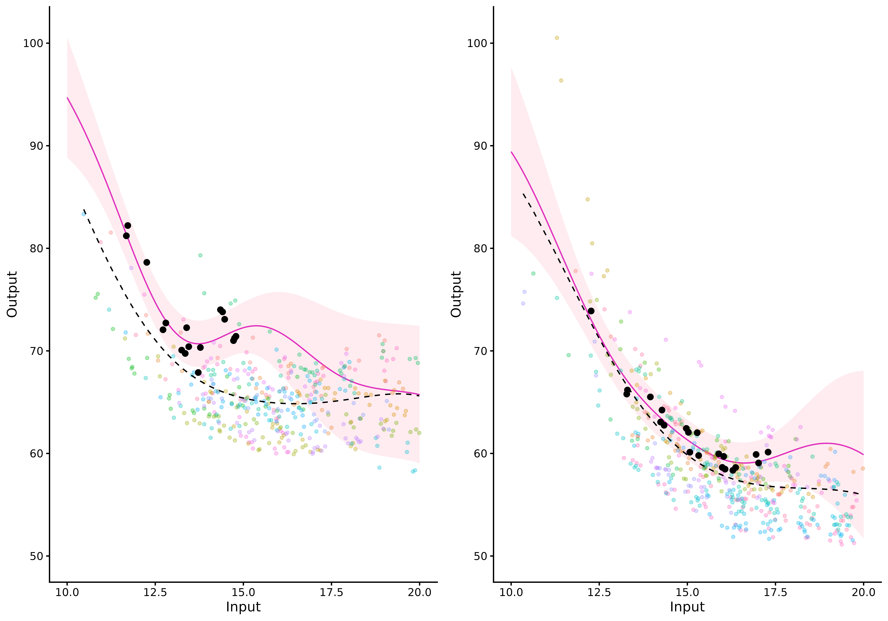
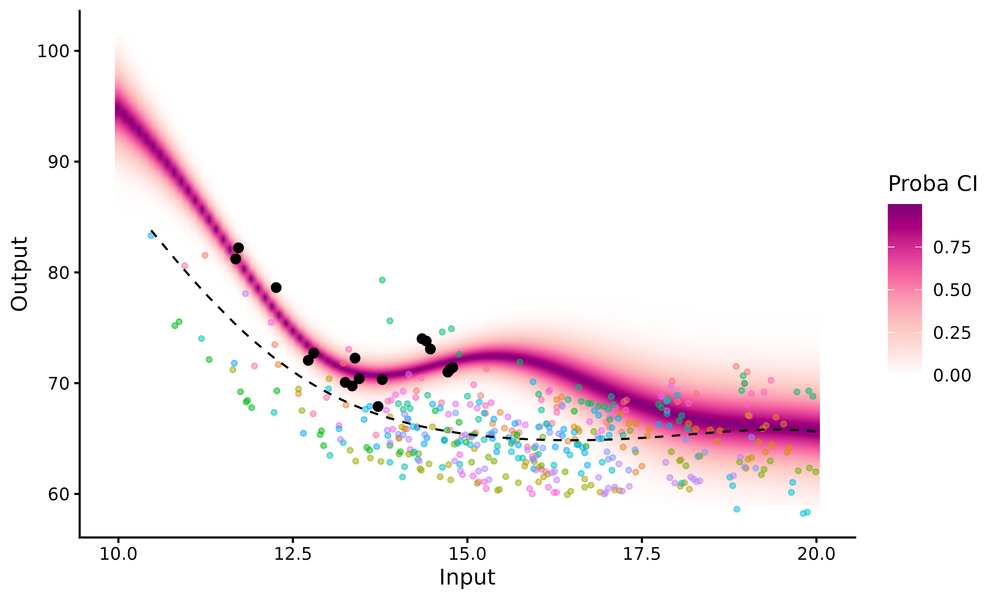

library(MagmaClustR)
library(dplyr)
library(ggplot2)
if(rlang::is_installed("gridExtra")){library(gridExtra)}Context
To explore the different features of Magma, we use the
swimmers dataset provided by the French Swimming Federation
(available here,
and studied more thoroughly here
and there).
This dataset gathers competition results in 100m freestyle events between 2002 and 2016 for 1725 men and 1731 women, and a total of 38481 and 38351 performances, respectively.
Throughout this swimmers example, we use Magma as a
decision support tool to detect promising young athletes, which is a
classical problem in an elite sport context. More specifically, Magma is
used to model swimmers progression curves and forecast their future
performances. Indeed, a multi-task GPs model offers new perspectives
like probabilistic predictions, which provides insights to sport
structures for their future decisions.
More generally, our task is to train a model with a large dataset and predict a new individual thanks to shared information.
To get a better idea of the swimmers dataset content, we
display the performances of 5 swimmers according to their age. Do all
the swimmers progress the same, i.e. with the same pattern? Do
the most successful young swimmers remain the best when they get older?
Those are the kind of questions we aim to tackle in the following.
ggplot2::ggplot(data=swimmers %>% filter(ID %in% 1:5),
mapping = ggplot2::aes(x=Age,y=Performance,colour=factor(ID)))+
ggplot2::geom_point(size=3) +
ggplot2::theme_classic() +
ggplot2::guides(colour="none")
This plot highlights the sparsity and irregularity of our functional data; swimmers performances are observed irregularly, with some areas containing very few observations (particularly for the younger ages). Moreover, it clearly appears that there are different swimmer profiles, especially due to different evolutions of morphology during teen years. Therefore, it might be important to take them into account if one wants to improve the quality of talent detection strategies.
Dataset format
The swimmers dataset contains 4 columns:
ID, Age, Performance and
Gender. Each row represents a performance realised by a
swimmer at a given age. More specifically, each column contains:
-
ID, the identifying number associated with each swimmer; -
Age, the age of the swimmer at the moment of the performance; -
Performance, the chronometric performance on a 100m freestyle (in seconds); -
Gender, a number indicating the competitive gender of the swimmer (1 corresponds to men and 2 to women).
knitr::kable(swimmers[1:5,])| ID | Age | Performance | Gender |
|---|---|---|---|
| 1 | 14.88 | 57.68 | 1 |
| 1 | 14.91 | 56.35 | 1 |
| 1 | 15.26 | 56.34 | 1 |
| 1 | 15.41 | 55.90 | 1 |
| 1 | 15.59 | 56.07 | 1 |
If new variables (such as weight, height, number of training hours …) would have been observed, any additional column would be treated as a covariate, and thus result in a model with multi-dimensional inputs.
Before starting to use Magma, we must ensure that our
dataset contains at least the three following mandatory columns with
adequate type: - ID: character or
factor; - Input: numeric; -
Output: numeric.
Classical pipeline
The overall process of the Magma algorithm can be decomposed in 3 main steps: training, prediction and plotting the results. The corresponding functions are:
Applying Magma on the swimmer dataset
Data organisation
For the sake of consistency, we split male and female swimmers into
different datasets: swimmers_m and swimmers_f.
The following study is dedicated to women performances and thus focus on
the swimmers_f dataset.
In addition, we need to change the name of the input and output
columns as indicated before, and remove the Gender one.
swimmers_m <- swimmers %>% filter(Gender == 1) %>%
select(-Gender) %>%
rename(Input = Age, Output = Performance)
swimmers_f <- swimmers %>% filter(Gender == 2) %>%
select(-Gender) %>%
rename(Input = Age, Output = Performance)To continue this data management procedure, the swimmers are allocated into two groups:
- those we use to train the model;
- the one for whom we predict future performances; let’s give her the fictive name Michaela.
To limit computation time in this illustrative example, we randomly select 20 swimmers for training. Even if the performances of Magma increase with the number of training individuals, 20 are more than enough to get a clear idea of how the algorithm works.
set.seed(3)
list_ID <- swimmers_f %>% pull(ID) %>% sample()
swimmers_train <- swimmers_f %>% filter(ID %in% list_ID[1:20])
swimmers_pred <- swimmers_f %>% filter(ID == 1718)
ggplot2::ggplot(data=swimmers_train,
mapping = ggplot2::aes(x=Input,y=Output,colour=factor(ID)))+
ggplot2::geom_point(size=1.5,alpha=0.3)+
ggplot2::geom_point(data = swimmers_pred,
size=3,
shape=17,
color="black") +
ggplot2::theme_classic() +
ggplot2::guides(colour="none")The triangles correspond to Michaela’s performances, whereas the coloured dots represent the swimmers data we use for training.
Training
It’s now time to train the model thanks to
train_magma(), for which several arguments can be
specified:
prior_mean: if we assume no prior knowledge about the 100m freestyle, we can decide to leave the default value for this parameter (i.e. zero). However, if we want to take expert advice into account, we can modify the value ofprior_meanaccordingly.kern: the relationship between observed data and prediction targets can be control through the covariance kernel. Therefore, in order to correctly fit our data, we need to choose a suitable covariance kernel. In the case of swimmers, we want a smooth progression curve for Michaela; therefore, we specifykern = "SE".
The most commonly used kernels and their properties are discussed in
the kernel
cookbook. Details of available kernels and how to combine them in
the package are available in help(train_magma).
-
common_hp: here, we assume that the set of hyper-parameters is common to all individuals. Thus, we model a context where individuals represent different trajectories of the same process, whereas different hyper-parameters indicate different covariance structures and thus a more flexible model.
As for any GP method, initialisation of the hyper-parameters may have
an influence on the final optimisation and lead to inadequate prediction
for pathological cases. Therefore, users may explicitly define specific
initial values through the dedicated ini_hp argument.
Other parameters can also be specified; see help(train_magma)
for details.
set.seed(3)
model <- train_magma(data = swimmers_train,
kern_0 = "SE",
kern_i = "SE",
common_hp = TRUE)
#> The 'prior_mean' argument has not been specified. The hyper_prior mean function is thus set to be 0 everywhere.
#>
#> The 'ini_hp_0' argument has not been specified. Random values of hyper-parameters for the mean process are used as initialisation.
#>
#> The 'ini_hp_i' argument has not been specified. Random values of hyper-parameters for the individal processes are used as initialisation.
#>
#> EM algorithm, step 1: 16.67 seconds
#>
#> Value of the likelihood: -1306.81108 --- Convergence ratio = Inf
#>
#> EM algorithm, step 2: 9.99 seconds
#>
#> Value of the likelihood: -1240.19542 --- Convergence ratio = 0.05371
#>
#> EM algorithm, step 3: 5.82 seconds
#>
#> Value of the likelihood: -1228.40746 --- Convergence ratio = 0.0096
#>
#> EM algorithm, step 4: 7.14 seconds
#>
#> Value of the likelihood: -1225.57666 --- Convergence ratio = 0.00231
#>
#> EM algorithm, step 5: 7.19 seconds
#>
#> Value of the likelihood: -1225.34949 --- Convergence ratio = 0.00019
#>
#> The EM algorithm successfully converged, training is completed.
#> Prediction for Michaela
As the Magma model is trained, we can now predict to predict
the evolution of Michaela’s performances. To perform prediction, we need
to specify two main parameters in the pred_magma()
function:
-
data: in our case, the sub-dataset containing Michaela’s current performances; -
trained_model, which corresponds to the model we just trained with the other 20 swimmers.
Let us mention that improvements in swimming are more prominent
during young ages, thus we here aim to predict the evolution of
Michaela’s performances between 10 and 20 years. Therefore, the argument
grid_inputs = seq(10,20,0.1) can be set to compute such a
forecast of interest.
pred <- pred_magma(data = swimmers_pred,
trained_model = model,
grid_inputs = seq(10,20,0.1),
plot = FALSE)
#> The hyper-posterior distribution of the mean process provided in 'hyperpost' argument isn't evaluated on the expected inputs.
#>
#> Start evaluating the hyper-posterior on the correct inputs...
#>
#> The 'prior_mean' argument has not been specified. The hyper-prior mean function is thus set to be 0 everywhere.
#>
#> Done!
#> Plots
The plot_gp()
function can be used to depict the evolution of Michaela’s predicted
performances.
plot_gp(pred_gp = pred,
data = swimmers_pred,
prior_mean = model$hyperpost$mean,
data_train = swimmers_train)  In the above figure, we can observe:
In the above figure, we can observe:
the prediction curve (purple line) and its associated 95% credibility interval (pink band);
the training data points in the background (displayed through
data_train). Each colour corresponds to one swimmer;the trained mean process as a dashed black line coming from the
prior_meanparameter.
Magma VS classic GP
The MagmaClustR package also provides an implementation of the standard GP regression, which we can compare to Magma in this example. For more details on how to fit a single GP, see Vignette GPs.
The graphs below correspond to predictions of Michaela’s performances between 10 and 23 years, according to Magma (left) and standard GP (right).
On this visual comparison, 3 distinct phases can be highlighted:
first phase: close to Michaela’s observed data (\(t \in [ 11, 14 ]\)), the two processes behave similarly. We note a slight increase in the variance for Magma, which is logical since the prediction also takes uncertainty over the mean GP into account;
second phase: on intervals of unobserved timestamps containing data points from the training dataset (\(t \in [ 14, 20 ]\)), Magma prediction is guided by the information coming from other individuals through the mean GP. Thus, the mean trajectory remains coherent and the uncertainty increases only slightly. On the contrary, the simple GP quickly drifts to the prior zero mean as soon as data lack, and uncertainty increases significantly.
third phase: where no observations are available, neither from the new individual nor the training dataset (\(t > 20\)), Magma behaves as expected, with a slow drift to the prior mean, with highly increasing variance.
Therefore, the main improvement in prediction brought by Magma lies in the second phase thanks to information shared across individuals.
Overall, the multi-task framework provides reliable probabilistic predictions for a new swimmer on a wider range of timestamps, potentially outside of the usual scope of GPs. Furthermore, the uncertainty provided through the predictive posterior distribution offers an adequate degree of caution in a decision-making process.
Comparison of individuals
To compare the evolution on both genders, we display below the
progression curves predicted by Magma for a fictive male
swimmer, called Michael (right) and randomly selected within
swimmers_m, along with the one for Michaela (left).
## Draw a random subset for training and an individual for prediction
set.seed(9)
list_ID_m <- swimmers_m %>% pull(ID) %>% unique() %>% sample()
swimmers_train_m <- swimmers_m %>% filter(ID %in% list_ID_m[1:20])
swimmers_pred_m <- swimmers_m %>% filter(ID %in% list_ID_m[24])
## Train Magma on the male swimmers sub-dataset
model_m <- train_magma(data = swimmers_train_m,
kern_0 = "SE",
kern_i = "SE",
common_hp = TRUE)
#> The 'prior_mean' argument has not been specified. The hyper_prior mean function is thus set to be 0 everywhere.
#>
#> The 'ini_hp_0' argument has not been specified. Random values of hyper-parameters for the mean process are used as initialisation.
#>
#> The 'ini_hp_i' argument has not been specified. Random values of hyper-parameters for the individal processes are used as initialisation.
#>
#> EM algorithm, step 1: 19.36 seconds
#>
#> Value of the likelihood: -1429.75903 --- Convergence ratio = Inf
#>
#> EM algorithm, step 2: 6.24 seconds
#>
#> Value of the likelihood: -1411.53737 --- Convergence ratio = 0.01291
#>
#> EM algorithm, step 3: 6.22 seconds
#>
#> Value of the likelihood: -1409.82806 --- Convergence ratio = 0.00121
#>
#> EM algorithm, step 4: 8 seconds
#>
#> Value of the likelihood: -1408.13089 --- Convergence ratio = 0.00121
#>
#> EM algorithm, step 5: 8.16 seconds
#>
#> Value of the likelihood: -1408.09953 --- Convergence ratio = 2e-05
#>
#> The EM algorithm successfully converged, training is completed.
#>
## Compute a prediction for Michael
pred_m <- pred_magma(data = swimmers_pred_m,
trained_model = model_m,
grid_inputs = seq(10,20,0.1),
plot = FALSE)
#> The hyper-posterior distribution of the mean process provided in 'hyperpost' argument isn't evaluated on the expected inputs.
#>
#> Start evaluating the hyper-posterior on the correct inputs...
#>
#> The 'prior_mean' argument has not been specified. The hyper-prior mean function is thus set to be 0 everywhere.
#>
#> Done!
#> 
We can note that both genders present similar patterns of progression: a quick improvement of performances at young ages, then a slowdown in progress that can even leads to a stagnation afterwards.
However, while performances are roughly similar in mean trend before the age of 14, they start to differentiate afterwards and then converge to average times with approximately a 5sec gap. Interestingly, the difference between men and women world records in swimming 100m freestyle competitions is currently 4.8sec (46.91 versus 51.71), which is consistent with the difference between convergence times of the two mean processes.
Customise graphs
With plot_gp()
In case of 1-dimensional inputs, we can depict Michaela’s prediction
graphs thanks to the plot_gp() function. Indeed, if by
setting the argument heatmap = TRUE, we can display a
heatmap of probabilities instead using a 95% credibility interval. Doing
so, we get a thorough visual quantification for both the dispersion of
the predicted values and the confidence we may grant to each of
them.
plot_gp(pred_gp = pred_f,
data = swimmers_pred,
data_train = swimmers_train,
prior_mean = model$hyperpost$mean,
heatmap = TRUE)
Create a GIF
If we want to create animated representations, please use the pred_gif()
and plot_gif()
functions, instead of pred_magma() and
plot_gp(). These functions offer dynamic plots by
generating GIFs thanks to the gganimate package. Such
graphs exhibit how the GP prediction evolves as we observe more data
points.
pred_gif() and plot_gif() functions work
the same as pred_magma() and plot_gp() (except
that no plot argument is required in
pred_gif()). Some extra arguments can be customized in
plot_gif(), like adjusting the GIF speed, saving the
plotted GIF (see ?gganimate for details)
pred_gif <- pred_gif(data = swimmers_pred,
trained_model = model,
grid_inputs = seq(10,20,0.1))
#> => 1 => 2 => 3 => 4 => 5 => 6 => 7 => 8 => 9 => 10 => 11 => 12 => 13 => 14 => 15 => 16 => 17
plot_gif(pred_gp = pred_gif,
data = swimmers_pred,
data_train = swimmers_train,
prior_mean = model$hyperpost$mean,
alpha_data_train = 0.3)
Reference
This example highlights the interest of using a multi-task GP to predict swimmers performances. However, the results are not restricted to this illustrative study. For further details, the complete derivation of the algorithm and experiments are published and available in MAGMA: inference and prediction using multi-task Gaussian processes with common mean.
To go further: from Magma to MagmaClust
To underline the main limitation of Magma, we now propose to predict the performances of an elite female swimmer in the dataset (under 60sec) instead of Michaela’s.
Due to the high level of this swimmer, all of her performances are far below the mean GP. Thus, when we try to predict her future evolution, we may actually underestimate her potential; indeed, her progression curve increases significantly once she has no data left, until it reaches the mean process. Although, this behaviour is expected since the prediction is guided by the information coming from other individuals (through the mean process) who are less successful than her, the method could benefit from accounting for differences between individual in the training dataset.
This is why enabling cluster-specific mean processes to take into account different swimmers profiles would be a relevant extension. This enhancement of Magma corresponds to the MagmaClust algorithm; see the corresponding vignette for further information.